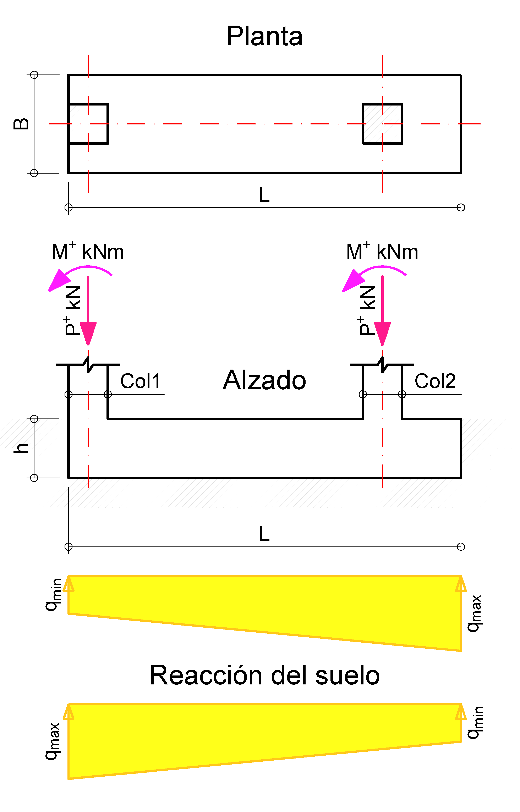
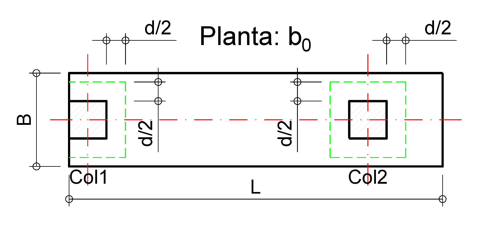
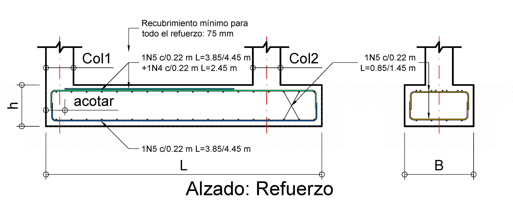
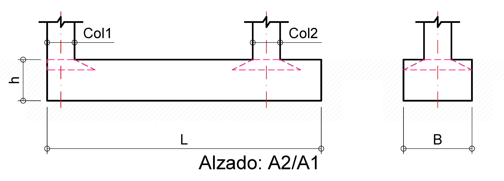

Aprender haciendo. Comprender antes de detallar.
Diseño de Zapata Combinada
Diseño de Zapata Combinada
Integración de Columnas 1 y 2 – Control de Presiones y Geometría
A diferencia de las zapatas aisladas, donde permitimos un comportamiento no lineal (despegue) bajo sismo, en zapatas combinadas buscamos un comportamiento en el que toda la base permanezca en compresión, evitando pérdida de contacto suelo-estructura. El predimensionamiento busca aproximar el centroide de la base a la resultante de las cargas de servicio (\( D + L \)), reduciendo la excentricidad global. Esto favorece una distribución de presiones más uniforme, pero no elimina necesariamente sus variaciones. La distribución final debe verificarse considerando las cargas axiales, los momentos aplicados y las dimensiones adoptadas.
La geometría de una zapata combinada suele ser extensa para poder alojar ambas columnas. Ajustar sus dimensiones longitudinales nos permite controlar la excentricidad de forma tan efectiva que, como decisión de diseño adoptada para este ejemplo particular, optamos por mantener las presiones máximas dentro del \( q_{adm} \) para todos los estados de carga. Cabe aclarar que esta es una recomendación práctica del ejercicio y no un requisito general; el uso de capacidades límite u otros criterios de aceptación geotécnica es totalmente válido si el estudio de suelos respectivo lo respalda.
Para el predimensionamiento se adopta el esfuerzo admisible neto indicado, descontando la contribución del peso propio de la zapata según la idealización utilizada:
\( q_{neto} = q_{adm} - ( \gamma_{conc} \cdot h ) \).
Este valor se emplea como criterio de comparación de las presiones de servicio; la evaluación de asentamientos totales y diferenciales corresponde a la comprobación geotécnica.
Datos del Problema e Insumos
Parámetros de diseño y procedencia de cargas
- Concreto (\( f'_c \)): 21 MPa (3000 psi)
- Acero (\( f_y \)): 420 MPa (Grado 60)
- Distancia entre ejes (\( S \)): 3.00 m
- Columnas: 40 x 40 cm (COL1 y COL2)
- Esfuerzo admisible (\(q_{adm}\)): 200 kN/m²
- Recubrimiento Libre: 75 mm (NSR-10 C.7.7.1)
- Refuerzo longitudinal en columnas: Calibre No.5.
- Tipo de Apoyo: Zapata vaciada contra el suelo

Figura 1: Modelo y Equilibrio. Zapata como "Viga Rígida" con presión lineal.
Las fuerzas presentadas a continuación corresponden a las reacciones en la base de las columnas COL1 y COL2 (Fz, My). Se ha verificado que estas reacciones incluyan los efectos gravitacionales y sísmicos del análisis global del edificio.
1. Reacciones en la Base
Valores para Combinación de Servicio y Localización de Resultante
| Componente | Columna COL1 (kN, kNm) | Columna COL2 (kN, kNm) |
|---|---|---|
| Muerta (D) | P=200, M=5 | P=300, M=0 |
| Viva (L) | P=40, M=0 | P=50, M=0 |
| Sismo (E) | P=30, M=30 | P=5, M=30 |
2. Predimensionamiento
Determinación de las dimensiones de la zapata
Antes de dimensionar por cortante y flexión, debemos verificar el anclaje a tensión y a compresión de las barras longitudinales de las columnas en el interior de la zapata combinada. Para este caso, tenemos barras N°5 (\( d_b = 15.9 \text{ mm} \)), \( f_y = 420 \text{ MPa} \) y \( f'_c = 21 \text{ MPa} \).
Dado que las columnas transfieren momento, algunas barras estarán traccionadas e intentarán "arrancarse" de la zapata. Se evalúa tanto el anclaje a compresión recta como el de tracción (asumiendo un remate con gancho a 90° en el fondo):
Calculada según requerimientos normativos (NSR-10 C.12.3):
- Base: Mayor entre \( \frac{0.24 f_y}{\sqrt{f'_c}} d_b = \mathbf{350 \text{ mm}} \) y \( (0.043 f_y) d_b = 287 \text{ mm} \).
- Se aplica factor de reducción de \( 0.75 \) a \( l_{dc} \) permitido según C.12.3.3(b), dado que el refuerzo de la columna está confinado por estribos cerrados No. 4 con separación de 90 mm (menor a 100 mm). Nota: esta reducción es aplicable solo si los estribos de confinamiento se extienden efectivamente dentro de la zona de desarrollo en la zapata, no solo en la columna.
- Valor requerido de diseño: \( 350 \times 0.75 = \) 263 mm
Con gancho estándar a 90° (NSR-10 C.12.5):
- Base: \( l_{dh} = \frac{0.24 f_y}{\sqrt{f'_c}} d_b = \mathbf{350 \text{ mm}} \).
- Se aplica factor de reducción de \( 0.70 \) a \( l_{dh} \) permitido según C.12.5.3(a). Nota: esta reducción es válida solo si se garantizan 65 mm de recubrimiento lateral y 50 mm en la extensión del gancho comprobados en su orientación real.
- Valor requerido de diseño: \( 350 \times 0.70 = \) 245 mm
La altura preliminar se establece a partir de la longitud de desarrollo requerida y de la geometría efectiva del refuerzo inferior. Cuando las barras terminan con gancho a 90°, la verificación a compresión debe considerar únicamente la longitud recta efectiva, puesto que el gancho no se considera eficaz para desarrollar barras a compresión.
Comparando los requisitos, gobierna la condición a compresión (\( l_{dc} = 263 \text{ mm} \)).
A este valor sumamos el recubrimiento inferior de 75 mm y las dos capas de refuerzo de la zapata (asumimos parrilla calibre No.5, \( 2 \times 15.9 \text{ mm} \)). De allí obtenemos la altura mínima constructiva requerida:
Definimos Long como la dimensión en la dirección de las columnas, y B como el ancho perpendicular. En zapatas combinadas, cada dimensión responde a un criterio físico distinto:
Se determina por equilibrio estático, buscando alinear el centroide de la zapata con la resultante de cargas.
Se define a partir de la capacidad portante del suelo (\( q_{adm} \)).
La relación \( Long/B \) es entonces un resultado del proceso de dimensionamiento, no un parámetro de entrada. En la práctica, se verifica que esta relación sea razonable (evitando geometrías excesivamente alargadas o muy compactas).
Buscamos el punto de aplicación de la carga total (\( D+L \)) respecto al eje de COL1 para alinear el centroide.
| Parámetro | COL1 (40x40) | COL2 (40x40) |
|---|---|---|
| Carga de Servicio (\( P_{D+L} \)) (kN) | 240 | 350 |
| Momento de Servicio (\( M_{y,D+L} \)) (kNm) | 5 | 0 |
La resultante cae dentro de la zapata y define la posición del centro geométrico requerido. Este es el principio fundamental del diseño: la geometría se ajusta a las cargas, no al revés.
Se busca que el centro geométrico de la zapata coincida con la resultante, por lo que:
Con \( X_R = 1.771 \, \text{m} \) y una distancia al borde de 0.20 m:
\( Long = 2 \cdot (1.771 + 0.20) = \mathbf{3.942 \text{ m}} \) → Se adopta Long = 4.00 m.
Con \( Long = 4.00 \text{ m} \), el centro geométrico de la zapata (a 2.00 m del borde) coincide prácticamente con la resultante de cargas de servicio, reduciendo la excentricidad (\( e \approx 0 \)) y favoreciendo una distribución uniforme de presiones en el suelo.
Con la longitud \( Long = 4.00 \text{ m} \) definida, se obtiene una primera estimación del ancho a partir del esfuerzo admisible neto.
Se propone inicialmente B = 0.80 m.
Al verificar la distribución de presiones de servicio (considerando excentricidades por sismo), se detecta que el ancho de 0.80 m es insuficiente, por lo que se incrementa a B = 1.00 m.
3. Validación de Servicio
Presión en los extremos para combinaciones de servicio
La zapata combinada funciona como una unidad rígida. Su principal ventaja es la redistribución de cargas: La zapata redistribuye las cargas mediante compatibilidad de deformaciones, generando una única resultante que reduce excentricidades individuales.
Ubicamos \( x=0.0 \text{ m} \) en el eje de COL1 y \( x=3.0 \text{ m} \) en el eje de COL2.
La zapata se extiende desde \( x=-0.20 \text{ m} \) hasta \( x=3.80 \text{ m} \).
Figura 2: Diagrama de presiones de contacto para las tres combinaciones de servicio analizadas. La zapata mantiene contacto total (\( q > 0 \)) en toda su longitud.
| Componente | \(q_{serv,x=-0.20 m}\) (kPa) | \(q_{serv,x=3.80 m}\) (kPa) |
|---|---|---|
| B.2.3-2: D+L | 153.88 | 141.13 |
| B.2.3-8: D+0.75(0.7E)+0.75L | 173.21 | 119.85 |
| B.2.3-10: 0.6D-0.7E | 41.65 | 95.10 |
Se confirma que \( q_{min} \ge 0 \) (sin levantamiento) y \( q_{max} \le 190.4 \text{ kPa} \) (\( q_{neto} \)). Se satisface la verificación de presiones de contacto y no se presenta pérdida de contacto para las combinaciones evaluadas.
4. Comportamiento Estructural
Modelo: Zapata como "Viga Rígida" con presión lineal
Presiones calculadas para el diseño del concreto (Estado Límite Último):
| Combinación de Diseño | \( q_{u,x=-0.20 \text{m}} \) [kPa] | \( q_{u,x=3.80 \text{m}} \) [kPa] | Promedio [kPa] |
|---|---|---|---|
| B.2.4-2: 1.2D + 1.6L | 195.45 | 176.55 | 186.00 |
| B.2.4-5: 1.2D + E + L | 228.50 | 134.00 | 181.25 |
| B.2.4-5: 0.9D - E | 64.94 | 142.56 | 103.75 |
Figura 3: Diagrama de presiones de contacto para las combinaciones últimas analizadas.
Para evaluar adecuadamente la alternancia direccional del sismo, el análisis integral debe contemplar las combinaciones con la acción sísmica invertida (\(-E\)), destacando de manera especial la combinación \(0.9D - E\). Esta verificación es indispensable estructuralmente, ya que la reducción de las cargas gravitacionales sumada al momento de vuelco sísmico puede inducir momentos de inversión, modificando las zonas en tracción de la zapata y, por ende, alterando los requerimientos del armado inferior.
No obstante, tal como se evidencia gráficamente en las envolventes de cortante último (\(V_u\)) y momento flector (\(M_u\)), para la configuración geométrica masiva y las solicitaciones específicas de este ejemplo, esta combinación no gobierna el diseño. Las demandas críticas continúan siendo controladas por las combinaciones mayoradas dominadas por gravedad (\(1.2D + 1.6L\) y \(1.2D + E + L\)).
Los diagramas se construyen a partir de la interacción entre las cargas transmitidas por las columnas y la reacción ascendente del suelo. Para representar la transferencia de las acciones de las columnas, se adopta una distribución equivalente sobre las zonas de apoyo, en lugar de idealizar toda la acción como una carga puntual aislada.
Esta representación permite visualizar de forma continua la evolución de las solicitaciones a lo largo de la zapata. La continuidad de las curvas debe interpretarse en el contexto de la idealización adoptada y de las condiciones de equilibrio del modelo.
Demanda y Envolvente: La envolvente de momentos últimos permite identificar las regiones de demanda predominante: el momento negativo en el tramo entre columnas orienta el diseño del refuerzo superior, mientras que los momentos positivos en los voladizos pueden exigir refuerzo inferior. El diseño debe cubrir la envolvente completa, verificando tanto la magnitud de las solicitaciones como su ubicación y extensión.
Figura 4: Diagrama de fuerza cortante última \( V_u \) (kN). Se aprecian claramente los saltos abruptos generados por las cargas concentradas de las columnas.
Bajo el modelo de viga invertida, el cortante se verifica a una distancia \( d \) de las caras de las columnas. Los picos de cortante ocurren en los apoyos, donde la carga puntual de la columna contrarresta la presión ascendente del terreno, definiendo los requerimientos de peralte y refuerzo transversal.
Figura 5: Diagrama de momento flector último \(M_u\) (kNm) evaluado analíticamente mediante las ecuaciones cúbicas por tramos y dibujado del lado de la tracción.
El diseño debe cubrir la envolvente completa de momentos: se dispondrá refuerzo superior para resistir el momento negativo máximo en el vano entre columnas, y refuerzo inferior en las zonas de los voladizos para absorber los momentos positivos generados por la presión del suelo.
Para el análisis longitudinal se adopta un modelo de cargas netas en el que se consideran las acciones de las columnas y la reacción del suelo asociada exclusivamente a estas.
Las fuerzas internas (momento flector y fuerza cortante) se generan por los gradientes inducidos por las cargas concentradas. El peso propio de la zapata y el relleno actúan hacia abajo como una carga distribuida uniforme, la cual es contrarrestada directamente por una reacción ascendente del terreno de igual magnitud.
Al compensarse mutuamente bajo esta idealización, su exclusión del cálculo de \( q_u \), \( M_u \) y \( V_u \) no es una "simplificación conservadora", sino el proceder coherente con el enfoque de presiones netas.
5. Verificación de Cortante Unidireccional
Revisión a una distancia \( d \) de la cara de los apoyos
5.1 Cortante Unidireccional (Comportamiento como Viga Ancha)
Sección crítica evaluada a una distancia \( d \) de la cara de la columna.
La sección crítica se ubica a una distancia \( d \) de la cara de cada columna (NSR-10 C.11.1.3.1). El valor de \( V_u \) se obtiene del diagrama de fuerzas cortantes para cada combinación última, leyendo la magnitud en dichas secciones críticas.
Resistencia nominal al cortante del concreto no preesforzado (NSR-10 C.11.2.1.1). Se calcula para el ancho de la zapata \( b_w \):
Con \( \phi = 0.75 \) (NSR-10 C.9.3.2.3), \( \lambda = 1.0 \) (concreto peso normal)
El valor de \( V_u \) corresponde a la fuerza cortante obtenida del diagrama en la sección ubicada a una distancia \( d = 0.367 \text{ m} \) desde la cara de cada columna. Este análisis es integral y evalúa todas las secciones críticas de falla potencial.
Nota de cálculo: Se presentan los valores críticos ocurridos en las caras internas (entre apoyos), situadas en \( x = 0.57 \text{ m} \) para COL1 y \( x = 2.43 \text{ m} \) para COL2. Debido a la magnitud de las cargas, el cortante en la cara externa de COL2 (\( x = 3.57 \text{ m} \)) no es gobernante y se omite en este resumen.
| Sección Crítica | Abscisa \( x \) [m] | \( V_u \) (1.2D+1.6L) | \( V_u \) (1.2D+E+L) |
|---|---|---|---|
| Cara Interna COL1 | 0.57 | -155.5 kN | -141.9 kN |
| Cara Interna COL2 | 2.43 | 194.2 kN | 209.5 kN |
Para \( h=0.45 \text{m} \), la resistencia es \( \phi V_n = \phi V_c = 214.5 \text{ kN} \).
Como \( V_{u,max} (209.5 \text{ kN}) < 214.5 \text{ kN} \), el diseño CUMPLE por cortante unidireccional.
Los valores de \( V_u \) y \( M_u \) presentados en este ejemplo corresponden a la integración de presiones sobre todo el ancho real de la zapata (B), por lo que los resultados representan directamente las fuerzas internas totales de la sección.
En este caso, como B = 1.00 m, los resultados coinciden numéricamente con un análisis “por metro de ancho”. Sin embargo, esto es una coincidencia geométrica y no una suposición del modelo.
Para otros valores de B, sería necesario diferenciar explícitamente entre resultados por unidad de ancho y resultados totales.
6. Cortante por Punzonamiento
Revisión a \( d/2 \) de la cara de los apoyos
Realizamos un equilibrio de fuerzas. La carga puntual de la columna (\( P_u \)) es contrarrestada por la reacción del suelo que empuja dentro del área crítica (\( A_{crit} = 0.668 \text{ m}^2 \)) ubicada a \( d/2 \):
Donde \( q_u \) es la presión última. En este ejemplo, al considerar una distribución lineal de presiones, esta presión se evalúa en el centroide de dicha área crítica.
Se rige por el menor de tres valores normativos (NSR-10 C.11.11.2.1) evaluados a lo largo del perímetro crítico \( b_o = 3268 \text{ mm} \):
• Ec. C.11-32
• Ec. C.11-33 (Gobierna en este ejemplo)
Para un diseño preciso, se evalúa la presión \( q_u \) exactamente en el eje del área crítica de cada columna, considerando el gradiente de presiones del modelo.
- Perímetro (\( b_0 \)): 1.93 m
- Área Crítica (\( A_c \)): 0.448 m²
- Combinación que Gobierna: (\( 1.2 D + 1.6 L \))
- \( q_u \) eje Área Crítica: 194.1 kPa
- Solicitación \( V_u \): 217.1 kN
- Resistencia \( \phi V_c \): 805.2 kN
- Perímetro (\( b_0 \)): 3.07 m
- Área Crítica (\( A_c \)): 0.588 m²
- Combinación que Gobierna: (\( 1.2 D + 1.6 L \))
- \( q_u \) eje Área Crítica: 180.3 kPa
- Solicitación \( V_u \): 333.9 kN
- Resistencia \( \phi V_c \): 1277.4 kN
Lados: \( 0.584 + 0.584 + 0.767 = \mathbf{1.93 \text{ m}} \).
Cabe en el ancho de 1.00 m.
Lados: \( 4 \cdot (0.400 + 0.367) = \mathbf{3.07 \text{ m}} \).
Ocupa 0.767 m de los 1.00 m disponibles.

Diferenciación del perímetro de control a una distancia \( d/2 \). Se debe analizar con especial cuidado la columna de borde, donde el perímetro solo tiene 3 lados efectivos para la transferencia de cortante.
Alcance de la Revisión: Este es un análisis de punzonamiento básico que reporta un esfuerzo cortante promedio sobre el perímetro crítico. Debe tenerse en cuenta que esta verificación preliminar no ha considerado el incremento local de esfuerzo debido a la existencia de momento flector transferido desde la columna.
7. Diseño por Flexión
Determinación de armadura superior e inferior
El momento de diseño \( M_u \) se evalúa en las caras de las columnas y a lo largo del vano, identificando la envolvente completa de momentos. En este ejemplo de zapata combinada, el caso crítico corresponde al momento negativo en el tramo entre columnas, donde la zapata trabaja como una viga invertida.
El acero se determina garantizando que la resistencia nominal ponderada (\( \phi M_n \)) iguale o supere la demanda (\( M_u \)). Verificando que se trata de una sección controlada por tracción (\( \phi = 0.90 \)):
De aquí se despeja el acero requerido por cálculo (\( A_{s,req} \)). Para el diseño, gobernará el mayor valor entre este \( A_{s,req} \) y el acero mínimo normativo exigido para elementos sometidos a flexión. Priorizamos la posición del refuerzo para el sentido longitudinal, ubicándolo en la capa más exterior para garantizar el mayor peralte efectivo.
| Ubicación Crítica | Abscisa \( x \) [m] | \( M_u \) (1.2D+1.6L) | \( M_u \) (1.2D+E+L) |
|---|---|---|---|
| Cara externa COL1 / Interna COL1 | -0.20 / 0.20 | 0.0 / -51.2 | 0.0 / -80.0 |
| Cara interna COL2 / Externa COL2 | 2.80 / 3.20 | 1.0 / 31.9 | 17.6 / 24.6 |
| MÁXIMO NEGATIVO (Vano) | x ≈ 1.27 / 1.38 m | -183.5 kNm | -195.4 kNm |
Los valores de \( V_u \) y \( M_u \) presentados en este ejemplo corresponden a la integración de presiones sobre todo el ancho real de la zapata (B), por lo que los resultados representan directamente las fuerzas internas totales de la sección.
En este caso, como B = 1.00 m, los resultados coinciden numéricamente con un análisis “por metro de ancho”. Sin embargo, esto es una coincidencia geométrica y no una suposición del modelo.
Para otros valores de B, sería necesario diferenciar explícitamente entre resultados por unidad de ancho y resultados totales.
- Refuerzo Mínimo, C.10.5.4, (\( \rho_{min} = 0.0018 \)): \( A_{s,min} = 0.0018 \cdot 1000 \cdot 450= \mathbf{810\text{ mm}^2} \)
- Refuerzo Negativo (Superior): Requerido \( 1478 \text{ mm}^2 \) → Se adopta 5 No. 5 + 4 No. 4, \( \phi M_n = 198 \text{ kNm} \).
- Refuerzo Positivo (Inferior): Requerido \( 231 \text{ mm}^2 < A_{s,min} \) → Controla el mínimo → Se adopta 5 No. 5, \( \phi M_n = 133 \text{ kNm} \).
Se propone una malla base superior de 5 No. 5 (1 @ 200 mm) continua. En la zona de máximo momento negativo, se adicionan 4 bastones No. 4, alcanzando un \( A_s \) total de 1496 mm².
Esta disposición sigue el principio de compatibilidad entre el diagrama de momentos y el diagrama de refuerzo, concentrando acero donde la demanda estructural es mayor.

Estrategia sugerida: Combinación de barras 5 No. 5 (1 @ 200 mm) + 4 No. 4 (alternadas) para cumplir con el momento negativo superior, optimizando el consumo de acero sin comprometer la separación máxima.
*Los bastones se extienden desde la zona de \( M_{max} \) una longitud de desarrollo \( L_d \), y se interrumpen donde la malla base es suficiente, adicionando anclaje de \( d \) o \( 12d_b \).
8. Diseño Transversal
Modelo de viga imaginaria para transferencia en dirección B
Se idealiza el comportamiento transversal mediante una viga imaginaria empotrada en la columna, extendiéndose una distancia \( d/2 \) desde cada cara, en este caso \( d = 351.2 \text{ mm} \) . La carga \( w_u \) se obtiene repartiendo la reacción total sobre el ancho \( B \).
En la dirección transversal, la proyección del voladizo desde la cara de la columna es menor que el peralte efectivo (\( l_{vol} < d \)). Por tanto, la sección crítica de cortante unidireccional queda fuera de la zapata y esta verificación no resulta aplicable para la geometría adoptada. El valor N.A. (No Aplica) en los resultados indica que no existe una sección crítica de concreto dentro de la zapata en la posición definida por el procedimiento de cálculo normativo.
\( b_{eff} = 0.58 \text{ m} \) | \( L = 1.00 \text{ m} \)
Cargas (\( w_u \)):
• \( 304 \text{ kN/m} \) (1.2D+1.6L)
• \( 310 \text{ kN/m} \) (1.2D+E+L)
Resistencia:
• \( V_u = N.A. \text{ kN} < \phi V_c (118 \text{ kN}) \)
• \( M_u \approx 14 \text{ kNm} \) (Controla mín.)
\( b_{eff} = 0.75 \text{ m} \) | \( L = 1.00 \text{ m} \)
Cargas (\( w_u \)):
• \( 440 \text{ kN/m} \) (1.2D+1.6L)
• \( 415 \text{ kN/m} \) (1.2D+E+L)
Resistencia:
• \( V_u = N.A. \text{ kN} < \phi V_c (154 \text{ kN}) \)
• \( M_u \approx 20 \text{ kNm} \) (Controla mín.)
En este caso, el diseño transversal está gobernado por acero mínimo.
No generalizar: para zapatas con mayores cargas o anchos \( B \), la flexión y el cortante transversal pueden controlar el diseño y exigir mayores cuantías o espesores.
9. Aplastamiento en la Base
Interfaz Columna–Zapata (NSR-10 C.10.14)
Evaluamos la capacidad del concreto de la zapata para recibir la carga concentrada de la columna:
Donde \( A_1 \) es el área de la columna y \( A_2 \) es el área de la base del tronco de pirámide (dispersión 2H:1V). El factor de confinamiento \( \sqrt{A_2/A_1} \) está limitado a 2.0.
Dispersión restringida en un sentido por el lindero.
- \( A_1 = 0.16 \, \text{m}^2 \)
- \( A_2 = 0.70 \times 1.00 = 0.70 \, \text{m}^2 \)
- \( \sqrt{A_2/A_1} = 2.09 \rightarrow \mathbf{2.0} \)
Incluso con la restricción de borde, se alcanza el confinamiento máximo.
Dispersión simétrica en todas las direcciones.
- \( A_1 = 0.16 \, \text{m}^2 \)
- \( A_2 = 1.00^2 = 1.00 \, \text{m}^2 \)
- \( \sqrt{A_2/A_1} = 2.50 \rightarrow \mathbf{2.0} \)
Capacidad plena por desarrollo geométrico total.

Representación del tronco de pirámide (dispersión 2H:1V). Nótese cómo la limitación geométrica por borde de zapata reduce el área \( A_2 \), aunque usualmente se mantiene el factor de confinamiento máximo de 2.0.
En ambos apoyos, la resistencia de diseño por aplastamiento, (\( \phi P_n \approx 3,712 \text{ kN} \)), supera las cargas últimas consideradas, (\( 310 - 440 \text{ kN} \)). Esta verificación local no gobierna el diseño para las condiciones analizadas.
Nota: En zapatas convencionales, el factor de confinamiento suele alcanzar el límite de 2.0.
Es fundamental comprender que este diseño estructural representa una primera fase del proyecto. En la práctica profesional, este modelo se entrega al especialista en Geotecnia, quien valida las presiones mediante sus propios modelos y avala o solicita ajustes al diseño.
Validación en Obra: Antes de fundir el concreto, el geotecnista debe realizar la inspección visual del terreno excavado. En ese momento, si las condiciones reales del suelo difieren de lo previsto en el estudio inicial, se pueden (y deben) realizar los últimos ajustes técnicos.
La ingeniería de cimentaciones es proceso que requiere trabajo interdisciplinar.
Anexo: Criterios de Armado
- Acero Longitudinal Superior: Es el refuerzo principal del vano. Debe ser continuo para absorber la tracción generada por el momento negativo.
- Acero Longitudinal Inferior: Se dispone para resistir los momentos positivos en los voladizos y por requisitos de integridad.
- Acero Transversal: Se concentra bajo las columnas formando "vigas ocultas" de ancho \( B \), garantizando la transferencia de carga hacia los bordes.
- Recubrimiento: Se respetan los 75 mm mínimos en todas las caras en contacto con el terreno.
Se garantiza un recubrimiento de 75 mm por estar en contacto permanente con el suelo. Este valor es crítico para el cálculo del peralte efectivo (\( d \)) y la protección galvánica del refuerzo.
Consultas y Discusión Académica
Inicia sesión con tu cuenta de GitHub para dejar una pregunta o comentario técnico sobre este ejemplo.